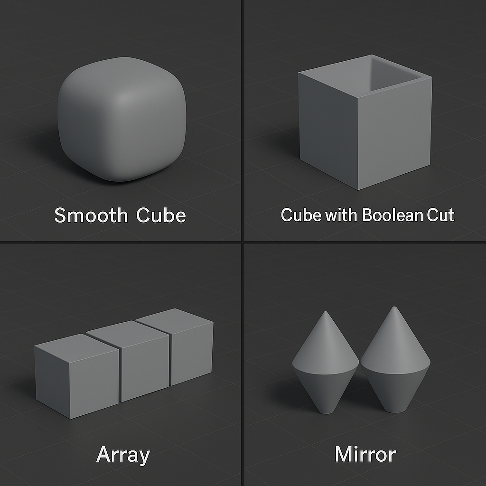

🧩 Урок 7: Базові модифікатори
1. Що таке модифікатори?
Модифікатори — це неразрушаючі інструменти в Blender, які змінюють об'єкт без редагування меша. Вони дозволяють додавати копії, згладжувати, дзеркалити або навіть вирізати форми.
2. Основні модифікатори
- Array — створює кілька копій об'єкта з певним кроком.
- Boolean — виконує логічні операції над об’єктами:
- Difference — вирізає об’єкт B з об’єкта A (віднімання).
- Union — об'єднує два об’єкти в один.
- Intersect — залишає лише ту частину, де об’єкти перетинаються.
- Mirror — дзеркальне відображення по обраній осі (X, Y, Z).
- Subdivision Surface — згладжує об'єкт, робить його більш округлим.

Приклади використання:
- Array: паркани, плитка, лавки, сходинки.
- Boolean:
- Difference: створення отворів у стінах, вікна, двері.
- Union: злиття кількох форм в єдиний об'єкт (наприклад, злиті куб і циліндр).
- Intersect: створення складної геометрії за рахунок перетину об'єктів (наприклад, перехрещення 2 фігур).
- Mirror: симетричне моделювання — транспорт, персонажі, меблі.
- Subdivision Surface: згладжування органічних форм, персонажів, прикрас.
Як додати модифікатор:
- Виділіть об'єкт → Перейдіть у вкладку
Modifier Properties (🔧).
- Натисніть Add Modifier.
- Виберіть потрібний модифікатор.
- Параметри можна змінювати або
Apply для застосування змін.
✅ Практична робота №7
Завдання: Вдоскональте свою сцену за допомогою модифікаторів:
- Додайте Array для повторюваних об’єктів (напр. лавки, колони, паркани).
- Зробіть отвори у стінах за допомогою Boolean.
- Використайте Mirror для симетричних деталей.
- Спробуйте Subdivision Surface для згладжування органічних або округлих форм (наприклад, куля або персонаж).